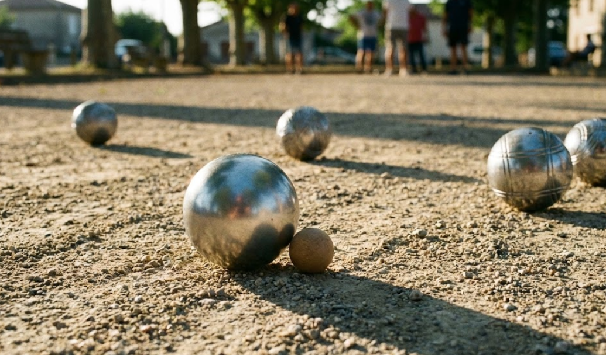

Choisir sa boule de pétanque est une étape essentielle pour tout joueur souhaitant progresser. Diamètre, poids, dureté, matériau, stries... de nombreux critères entrent en compte pour trouver la triplette adaptée à sa morphologie et son style de jeu. Que vous soyez pointeur, tireur ou milieu, ce guide vous aide à sélectionner les boules de pétanque qui correspondent à vos besoins.
Quelle boule de pétanque est faite pour vous ?
5 questions rapides pour identifier les caractéristiques idéales selon votre profil de joueur.
À quelle fréquence jouez-vous ?
Votre niveau de pratique oriente le choix entre boules de loisir et boules homologuées.
Quel rôle occupez-vous dans l'équipe ?
Le poste détermine les caractéristiques techniques à privilégier.
Mesurez votre main
Du pli du poignet jusqu'à l'extrémité du majeur, main ouverte à plat.
Quel sol sous vos pieds ?
La nature du terrain conditionne la dureté et le type de stries.
Quel type d'acier préférez-vous ?
Le matériau impacte le grip, l'entretien et la durée de vie.
Votre triplette sur mesure
Boules de loisir ou boules de compétition ?
Avant de choisir vos boules, déterminez votre niveau de pratique. Les boules de loisir conviennent aux parties occasionnelles entre amis ou en famille. Proposées en un seul poids et diamètre, elles sont lestées (sable ou eau) pour faciliter le jeu et s'adaptent à toutes les mains.
Les boules de compétition sont homologuées par la Fédération Internationale de Pétanque et Jeu Provençal (FIPJP). Elles sont obligatoires pour participer aux concours et tournois officiels. Même pour une pratique amateur régulière, les boules homologuées offrent une meilleure qualité, un comportement plus régulier sur le terrain et des sensations de jeu incomparables.
Les boules de compétition doivent respecter un cahier des charges précis : fabrication en métal, boules creuses, inscription du poids et de la marque, diamètre entre 70,5 et 80 mm, poids entre 650 et 800 g pour les joueurs de plus de 11 ans.
Choisir le diamètre de sa boule
Le diamètre de la boule doit être adapté à la taille de votre main. Une boule trop petite "accrochera" au bout des doigts et perdra en précision. Une boule trop grosse sera difficile à tenir correctement pendant le lancer.
Selon une étude de Vartan Berberian, expert ayant collaboré avec plusieurs fabricants, le diamètre moyen utilisé par les joueurs est de 74,5 mm. Un diamètre entre 74 et 75 mm constitue un bon compromis pour la plupart des morphologies, offrant une prise en main confortable et une stabilité au jeu.
Pour déterminer votre diamètre idéal, mesurez la longueur de votre main du poignet au bout du majeur. Les fabricants proposent généralement des tableaux de correspondance. En règle générale, les petites mains (femmes, enfants) s'orientent vers des diamètres de 71 à 73 mm, les mains moyennes vers 73 à 75 mm, et les grandes mains vers 75 à 78 mm.
Le choix du diamètre dépend aussi du poste occupé. Les pointeurs préfèrent souvent des boules de petit diamètre (72 à 74 mm) pour offrir moins de surface au tireur adverse. Les tireurs optent pour des diamètres plus grands (75 à 78 mm) car une boule plus grosse augmente les chances de toucher la cible.
Choisir le poids de sa boule
Le poids des boules de compétition varie de 650 à 800 grammes. Les poids standards se situent entre 680 et 710 grammes. Le choix du poids influence directement votre style de jeu et votre endurance sur les longues parties.
Les tireurs préfèrent généralement des boules légères (680 à 690 g). Moins de poids signifie moins d'effort pour le bras, ce qui améliore la précision et réduit la fatigue lors des tournois. Au tir, une boule légère permet de conserver son geste tout au long de la journée.
Les pointeurs optent pour des boules plus lourdes (700 à 720 g). Une boule lourde "stoppe" plus rapidement après l'impact au sol, ce qui facilite le contrôle de la donnée. Au point, le poids supplémentaire aide à stabiliser la trajectoire.
Le milieu choisit souvent un poids intermédiaire (690 à 700 g) pour s'adapter aux deux situations. Un poids entre 680 et 700 grammes offre une bonne polyvalence pour alterner entre point et tir sans altérer son geste.
Attention au rapport diamètre/poids, appelé densité. À poids égal, une petite boule est plus dense qu'une grosse. Si vous changez de diamètre, ajustez le poids pour conserver une sensation similaire en main. Il est conseillé de ne pas choisir un rapport de densité inférieur à 3 pour éviter que la boule dévie sur les terrains accidentés.
Choisir la dureté de sa boule
La dureté de la boule, exprimée en Rockwell HRC ou en kg/mm², influence son comportement au jeu. Elle est déterminée par le traitement thermique de l'acier. Le règlement de la FFPJP impose une dureté supérieure à 110 kg/mm².
Boules dures (plus de 42 HRC ou 135 kg/mm²)
Les boules dures résistent mieux aux chocs et ne marquent pas facilement. Elles conviennent particulièrement aux pointeurs qui recherchent une longévité maximale. Inconvénient : les boules dures rebondissent davantage à l'impact.
Boules demi-tendres (39 à 41 HRC ou 126 à 132 kg/mm²)
Les boules demi-tendres offrent un bon compromis entre durabilité et amorti. Elles conviennent aux joueurs polyvalents (milieu) qui alternent entre point et tir. Les rebonds sont limités tout en conservant une bonne résistance à l'usure.
Boules tendres (35 à 38 HRC ou 115 à 125 kg/mm²)
Les boules tendres absorbent les chocs et réduisent les rebonds. Elles conviennent particulièrement aux tireurs car elles facilitent les carreaux. Sur terrains durs et caillouteux, une boule tendre est plus efficace. Inconvénient : elle s'use plus rapidement et marque davantage.
Boules très tendres et anti-rebond
Certains fabricants proposent des boules très tendres ou avec technologie anti-rebond. Ces modèles maximisent l'amorti pour les tireurs exigeants. MS Pétanque utilise notamment un procédé de forgeage qui confère à ses boules une structure anti-rebond brevetée.
Choisir le matériau : inox ou carbone ?
Les boules de pétanque sont principalement fabriquées en deux types d'acier : l'acier inoxydable (inox) et l'acier au carbone. Le bronze existe aussi mais reste marginal.
Acier inoxydable (inox)
Les boules en inox ne rouillent pas et nécessitent peu d'entretien. Leur aspect reste brillant et satiné dans le temps. Elles offrent une excellente longévité. En revanche, l'inox procure moins de grip que le carbone, surtout pour les joueurs aux mains sèches. Les boules inox sont généralement plus coûteuses.
Acier au carbone
Les boules en acier carbone offrent une meilleure adhérence en main grâce à leur texture légèrement granuleuse. Elles procurent de meilleures sensations aux joueurs recherchant du grip. Inconvénient : l'acier carbone peut rouiller et nécessite un entretien après chaque partie (nettoyage et léger graissage).
Bronze (cupro-aluminium)
Le bronze permet de fabriquer des boules très tendres. Ces modèles sont particulièrement appréciés des tireurs pour leur amorti exceptionnel. Cependant, les boules en bronze sont plus sensibles aux marques sur leur surface en raison de leur tendreté.
Choisir les stries de sa boule
Les stries sont les rainures gravées sur la surface de la boule. Elles remplissent plusieurs fonctions : esthétique, identification du jeu sur le terrain, et influence sur le comportement de la boule.
Une boule striée accroche davantage au sol qu'une boule lisse. Les stries facilitent l'arrêt sur les terrains difficiles ou glissants. Les pointeurs apprécient souvent les boules striées pour mieux contrôler leur donnée.
Les tireurs préfèrent généralement les boules lisses ou faiblement striées. Une surface lisse permet à la boule de mieux glisser dans la main lors du lancer, améliorant la précision du geste.
Le choix des stries reste très personnel. Certains joueurs privilégient l'esthétique, d'autres les sensations tactiles. Les fabricants proposent de nombreux motifs : stries fines, larges, croisées, ou personnalisées.
Choisir sa boule selon son poste
Boules pour pointeur
Le pointeur recherche précision et contrôle. Privilégiez un petit diamètre (72 à 74 mm) pour offrir moins de surface au tireur, un poids lourd (700 à 720 g) pour un meilleur arrêt, une dureté élevée pour la longévité, et des stries pour l'accroche au sol.
Boules pour tireur
Le tireur recherche puissance et amorti. Privilégiez un grand diamètre (75 à 78 mm) pour augmenter les chances de toucher, un poids léger (680 à 690 g) pour réduire la fatigue, une dureté tendre pour limiter les rebonds et faciliter les carreaux, et une surface lisse ou faiblement striée.
Boules pour milieu
Le milieu doit être polyvalent. Optez pour un diamètre moyen (73 à 76 mm), un poids intermédiaire (690 à 710 g), et une dureté demi-tendre. Ces caractéristiques permettent d'alterner entre point et tir selon les besoins de la partie.
Conseils pour bien choisir
Avant d'acheter, essayez plusieurs modèles si possible. La prise en main et les sensations personnelles restent les meilleurs critères de choix. Il n'existe pas de boule universelle : la sélection se fait en fonction de votre morphologie et de vos préférences.
Pour un premier achat en compétition, privilégiez une boule polyvalente d'entrée de gamme. Inutile de dépenser 300€ dans une triplette haut de gamme quand on débute. Les boules homologuées "premier prix" (moins de 100€) conviennent parfaitement pour progresser.
Pensez à l'entretien de vos boules. Nettoyez-les après chaque partie, graissez-les légèrement pour le stockage (surtout les boules carbone), et dégraissez-les avant de rejouer. Un bon entretien prolonge la durée de vie de votre triplette et maintient la précision du jeu.
Pour les juniors, des modèles adaptés existent avec des poids et diamètres réduits. La boule Obut Match Minimes, par exemple, convient aux enfants de moins de 12 ans tout en étant homologuée pour la compétition.